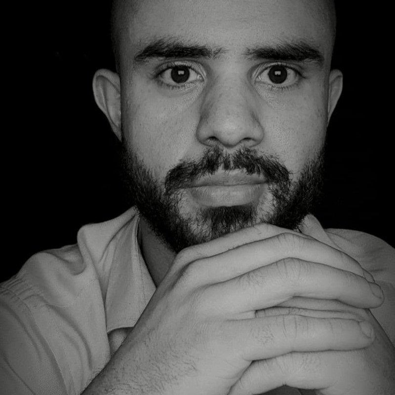

Sobre Mim

Meu nome é Rodrigo Trindade e sou movido por crescimento, disciplina e propósito. Busco constantemente evoluir, tanto na minha vida pessoal quanto profissional, encarando desafios como oportunidades de aprendizado e desenvolvimento.
Atualmente, curso Ciências da Computação e possuo formação técnica em Tecnologia da Informação, onde venho construindo uma base sólida em tecnologia, com foco em lógica, sistemas e resolução de problemas.
No âmbito profissional, atuo na empresa TIM, onde desenvolvo habilidades como comunicação, trabalho em equipe e foco em resultados. Em apenas 6 meses de atuação, fui reconhecido com o prêmio Excellent Group, refletindo meu comprometimento, desempenho e dedicação no ambiente de trabalho.
Minha fé cristã é um dos pilares da minha vida, guiando minhas decisões e fortalecendo valores como constância, responsabilidade e integridade. Estou também em um momento importante, me preparando para o casamento, o que reforça ainda mais minha visão de futuro, compromisso e construção de uma base sólida para minha vida.
Além da minha jornada acadêmica e profissional, valorizo atividades que contribuem para meu desenvolvimento pessoal. Gosto de jogar futebol às sextas-feiras, tocar violão como forma de lazer, explorar jogos digitais e, atualmente, estou aprendendo xadrez, buscando desenvolver ainda mais meu raciocínio estratégico. Também possuo conhecimentos básicos em sonoplastia e mídia. A prática de atividades físicas, como a musculação, também faz parte da minha rotina, contribuindo para minha disciplina, foco e bem-estar.
Sou uma pessoa comprometida com meus objetivos, com mentalidade de crescimento e disposto a construir uma trajetória sólida através de esforço, aprendizado contínuo e disciplina.